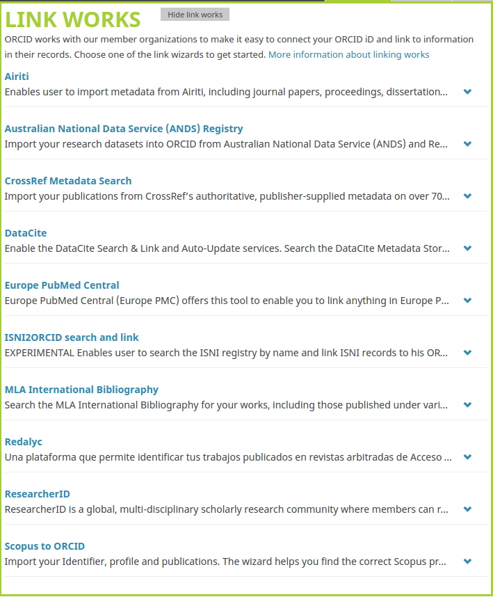
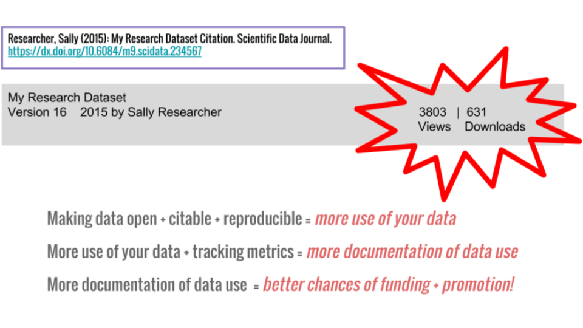

Building an Online Research Profile for Data Discovery and Publishing
Vicky Steeves & Nick Wolf | November 14, 2017

Barriers to Your Work Being Cited
- Your publications or datasets are not online
- Your publications or datasets are online, but behind a paywall
- Your publications or datasets are online, but not indexed/identified
- Your publications or datasets are online, but you are not (i.e. no profile)
Advantages to Tracking Citations:
- Demonstrate to funders/promotion committees you & your data make big impacts in your field!
- they judge merit based on intellectual merit and wider impact
- tangible evidence to weigh against the cost of research
- Monitor usage of datasets!
- You can know what forms of data prep and data publication are most effective for sharing/open science!
- Uncover opportunities for collaboration amongst peers
Evaluating Research Metrics
When choosing which metrics you want to track, you have to consider what is being measured, and the strength of the evidence for impact.
Ask yourself: what am I trying to prove?
- quality of my research?
- quantity of my research?
- societal impact of my research?
- political impact of my research?
- field-specific impact of my research?
Types of Research Metrics
Citation Counts
The pure number of times that your data or publication has been cited.
Confidence: mid-to-low; not a true measure because papers/datasets may be cited for reasons other than acknowledging influence (refutation, etc.)
H-Index
A measure of impact derived from citation counts: researchers have an index h if exactly h of their published papers have been cited h or more times.
Confidence: high; have to produce highly cited papers in quantity to score well.
Types of Research Metrics
Page Views
The number of times the publication and/or dataset catalog page has been viewed.
Confidence: mid; indicates of the level of interest in the dataset, and the level of awareness of its existence.
Download Counts
The number of times the publication and/or dataset catalog page has been downloaded.
Confidence: mid-high; indicates a strong level of interest in the data, but the metric doesn't reveal how the downloaded data was used.
Types of Research Metrics
Journal Impact Factor (JIF)
Gauges impact of a journal in a given year, defined as the number of citations received by papers published in the journal the preceding two years. Officially calculated by Thomson Reuters.
Confidence: low; it’s often used as a proxy measure for other things.
Post Publication Peer Review
A method of quality control where articles/datasets are reviewed after publication.
Confidence: low; more concerned with quality control than impact, but the nature of these reviews may reveal evidence of impact.
Types of Research Metrics
Bibliographic Managers
Services such as Mendeley, Zotero, CiteULike, and BibSonomy allow users to record online resources for their own reference or to recommend them to others.
Confidence: mid-to-low; rec feature weighs more heavily than simply adding to a bibliography.
Social Media Links
When a dataset or publication is mentioned on social media such as Twitter, blogs, Facebook ,etc.
Confidence: mid-to-low; the tone of the post is important but if people want to share with the WWW, it’s likely the research has had an impact on them.
Research Metrics: Altmetrics
an article-centered service which monitors sources for mentions of scholarly articles
- Social media, newspaper sites, policy documents, etc.
then computes its findings into a score to indicate quality and quantity of attention
- volume of mentions, weighted according to its score (newspaper article > tweets), author, and audience
Barriers to You Tracking Publications and Data Use
- Your publication or data host (publisher, repository) does not track use
- Your publication or data host (publisher, repository) inadequately tracks use
- Your publication or data does not contain the descriptive data (i.e. metadata) to allow other services to track its use.
How To Track Your Impact
Big Picture: Getting Credit for Data Citation

Solutions
Get a researcher profile ID
- Example: Orcid 0000-0001-5512-6151
Place your data with repositories that track use (at least downloads, preferably citations)
- Example: ICPSR 9440
Publish with journals and presses that deploy metric-enabling metadata
- Example: PLOS 10.1371/journal.pone.0084890
Researcher ID: ORCID
Open Researcher & Contributor ID
- free! persistent identifier for researchers (think DOI)
- link all your publications to you rather than someone with your same name!
- many journals are asking for an ORCID upon submission of materials
Do you have one? No? Let’s get you an ORCID.org!

Data Deposit: Data Repositories
When you publish, you should make the underlying data available in a repository that issues DOIs! You then link that DOI in your "Supplementary Materials" section!
This means that anyone who wants to use your data must go to this repository, download it, and cite their use if they publish using it!

Data Citation: Data Journals
You can also submit your data to a peer-reviewed data journal! These all issue DOIs and will associate your data with the corresponding publication.
Examples:
- Nature → Scientific Data
- PLoS Journals → PLoS One
**here is a list of data journals**
Tracking Tools for Researchers
Publications:
- ImpactStory: Pulls all data from ORCiD, follows Altmetric criteria
- ResearchGate: Make profile, link publications, track citations, get RG Score
- Academia.edu: Make profile, post publications, track citations
- PLOS/Altmetric tracker: Track PLOS articles using altmetrics
- Google Scholar: Tracking criteria are proprietary
Data:
- DataCite: Not for tracking, but for getting data ready for repositories, citation
Choosing a Profile Site
- Pulls data from another open source, non-profit -- ORCID
- Tracks impacts from a variety of sources, including social media
- Can't sell your data.
- Their impact score calculated via a proprietary algorithm, which can reach high values under questionable circumstances.
- Can sell your data if they want.
- Although papers can be read by non-users, an account is needed in order to download papers
- Can sell your data if they want.
The End Game: Track Use of Your Publications & Data
Questions?
Email us: vicky.steeves@nyu.edu
Learn more about RDM: guides.nyu.edu/data_management
Get this presentation: guides.nyu.edu/data_management/resources
Make an appointment: guides.nyu.edu/appointment